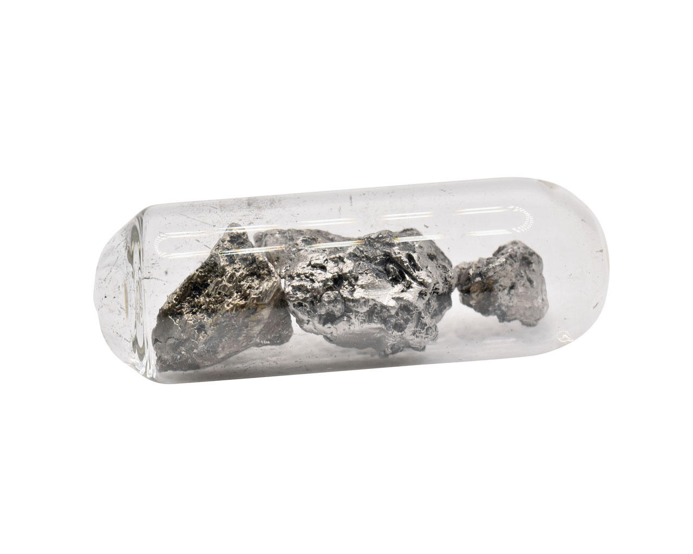

Lanthanum (La)
- Element Name:
- Lanthanum (La) is a chemical element in the lanthanide series, relatively abundant in the Earth's crust.
- Key Characteristics:
-
- Atomic Mass: 138.9055 u
- Atomic Number: 57
- Isotopes: Several, with La-139 being the most stable.
- Melting/Boiling Points: 920 °C / 3460 °C
- Density: 6.15 g/cm³
- Electronegativity: 1.1 (Pauling scale)
- Discovery: 1839 by Carl Gustaf Mosander.
- Appearance: Silvery-white metal, soft and malleable, oxidizes easily, and possesses paramagnetic properties.
- Technological Applications:
-
It is used in:
- Advanced optics (telescopes, cameras)
- Metal alloys
- Petrochemical catalysts
- NiMH rechargeable batteries (hybrid vehicles, electronics)
- Screens, camera lenses, and glass polishing in phones.
- Deposits:
-
Main deposits are found in:
- China (largest producer)
- United States
- Australia
- Brazil
- Health and Environmental Effects:
-
- Not highly toxic, but can cause irritation if inhaled.
- Extraction and processing can cause soil and water contamination, pushing towards sustainable technologies.
